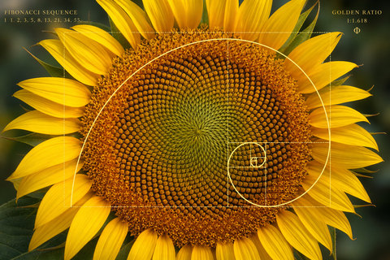
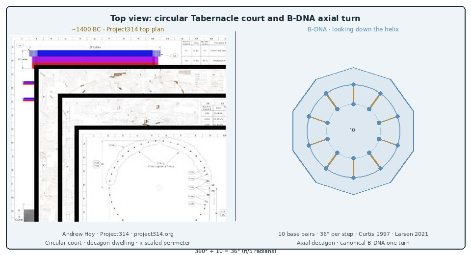

Study Hub
Scripture, Structure, and the Geometry of Creation
Holy geometry in what God made is our motivation to research whether Scripture's major structures were buried under tradition.
Holy geometry in what God made is our motivation to research whether Scripture's major structures were buried under tradition.
A sunflower spirals. A pinecone breathes. A Barnsley fern repeats one rule at every scale. Those shapes are why we ask whether Noah's ark, Moses's tabernacle, Solomon's temple, and Heavenly Jerusalem were designed in the contextual references of Scripture, not in the shoeboxes religion handed us.

Fibonacci packing in the head. Circumference and ratio before any commentary opens.

Phyllotaxis for strength and breath. Nature builds with pi before we name it.

The same leaf pattern at every scale. Intelligence written into form.
Everywhere we look in what He made, form speaks of intelligence. Human DNA, fingerprints, the eye, the flower, the leaf: creation carries shape that astonishes.
Do we honestly think God's own saving ark, tabernacle, temple, and city were plain box structures with no creativity and no handprint of His mind? Or did institutions understand the measure wrong?
That question is why these studies exist.
We believe that same summons is on sincere people now: find the Book, read it, and present it with its original intent. Josiah did not invent the law. He recovered what had been lost in the house of the LORD. This Study hub exists for that same recovery.

Promotes Rob Skiba and testingtheglobe.com.
Open study
Promotes Andrew Hoy and Project314.org.
Open study
Promotes Project Arc at Renformation.com.
Open study
Promotes Project Arc at Renformation.com.
Open study
Promotes Project Arc at Renformation.com.
Open study
Cartography before the globe model hardened.
Open study
Tabernacle π and decagon geometry in the genome: an original 2:22 Church study.
Read article
One Man's Quest for Truth lets the Bible speak about firmament and fixed earth.
testingtheglobe.com
Pi encoded in the Exodus curtains, 314 cubits of circumference.
project314.org
Contextual reconstructions of ark, temple, and New Jerusalem.
renformation.comMost studies here promote testingtheglobe.com, Project314.org, and Renformation.com. The Decagon DNA study is our own work. Our Story carries the personal burden behind this site.